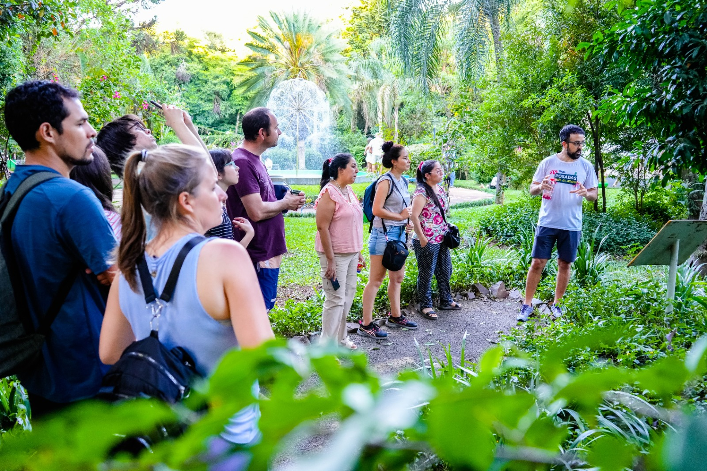

Recorridos Guiados en el Herbario
Se ofrece al público un recorrido educativo por las instalaciones del Herbario, donde se pueden ver algunos ejemplos de plantas secas (especímenes) y se explica cómo se organizan y se clasifican. Además, se muestran los distintos pasos y procesos que siguen estas plantas para ser conservadas adecuadamente.
Información Práctica
Es totalmente gratis.
Se realiza en horario de 8:00 a.m. a 4:00 p.m.
Debe completar el formulario de solicitud en línea en el cual especifique la intención de su visita, la fecha, el horario y la cantidad de personas que asistirán.
El formulario debe ser enviado a más tardar 5 días con antelación a su visita.
Requisitos y Recomendaciones
- Reservar con 5 Días de antelación.
- Comunicarse para confirmar disponibilidad.
- Llevar ropa cómoda y fresca.
- Llevar repelente y protección solar.
Información de Contacto
Teléfono: (809) 385-2611 ext 229
Correo electrónico: botanica@jbn.gob.do
Dirección: Av. República de Colombia, esquina los próceres, sector Altos de Galá. D.N